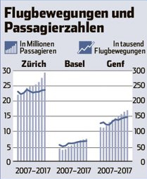
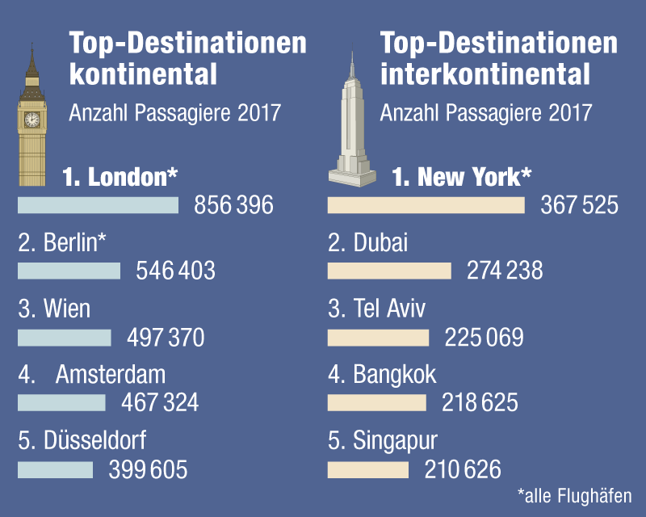
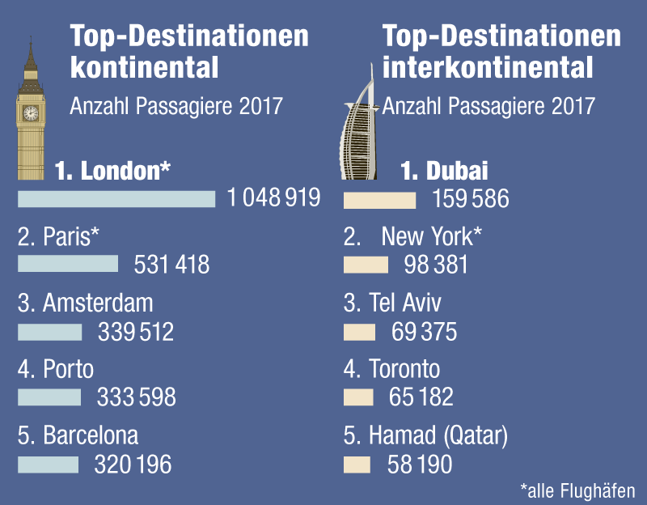
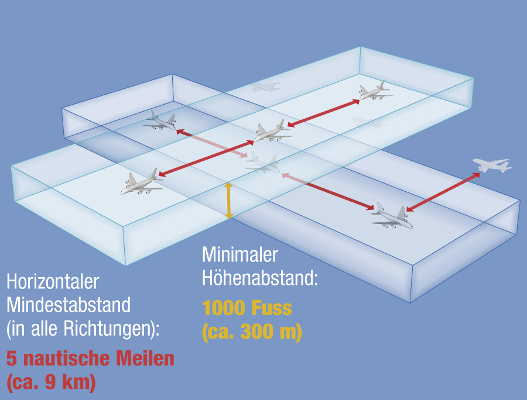

Hallo nach {place_name}!
Hallo!
Stellen Sie sich vor, Sie liegen auf einer Wiese in {place_name}. Stellen Sie sich vor, Sie liegen auf einer Wiese an Ihrem gewählten Ort. Ihr Blick richtet sich auf den blauen Himmel über Ihnen. Vereinzelt ziehen flockige Wolken am sonst strahlend blauen Himmel vorbei. Flugzeuge malen mit ihrem Pinsel aus Kondensstreifen auf die blaue Himmelsleinwand. Woher kommen diese Jets? Wohin gehen sie? Auf welchen Bahnen durchqueren sie die Schweiz?Finden wir es gemeinsam heraus und beobachten wir für einen Tag den Himmel über {place_name}. Finden wir es gemeinsam heraus und beobachten wir für einen Tag den Himmel.
Highways
Über {place_name} zeigt sich ein dichtes Netz von Flugrouten. Am Himmel zeigt sich ein dichtes Netz von Flugrouten. Denn obwohl Flügel frei machen sollen, dürfen Passagierflugzeuge die Schweiz nicht nach Belieben durchqueren. Farbig dargestellt sehen Sie die Super-Autobahnen über Ihnen, also jene Flugrouten, über die der meiste Passagierverkehr gelotst wird. Sei es nach Berlin, Mallorca oder Gran Canaria, auf eine dieser Strassen müssen sich die Jets einreihen. Doch schauen wir uns doch vor Ort um.Nachtflugverbot
Damit sich die Jets nicht in die Quere kommen, führt jede Route nur in eine Richtung. Höhe und Breite der Routen werden von der Skyguide überwacht. Noch ist es aber ruhig über {place_name}. Noch ist es aber ruhig. Die Uhr zeigt 5:30 Uhr. Das Nachtflugverbot untersagt Flugzeugen, zwischen 23 Uhr abends und 6 Uhr morgens auf Schweizer Flughäfen zu landen oder zu starten. Um sechs Uhr ist es dann so weit, die ersten Jets schwingen sich in die Luft, ihrem entfernten Ziel entgegen. Lassen wir die Flugzeuge starten.460'000 Landungen
Momentan sehen Sie die Flugbewegungen eines vollen Tages im Schnelldurchlauf. Bevor wir uns die Strassen über Ihnen genauer anschauen, werfen wir den Blick auf den Ursprung jeder Flugreise: Den Flughafen. Im letzten Jahr haben Schweizer Flughäfen insgesamt 54'911'905 Passagiere transportiert. Das sind 60 Prozent mehr als im Jahr 2000. 460'000 Landungen und Starts in einem Jahr! Am meisten beansprucht werden die Pisten von Zürich, Genf und Basel-Mulhouse.

Das Fenster in die Ferne
Der nächste der drei Flughäfen ist der Flughafen Zürich. Zwischen {place_name} und dem Flughafen liegen etwa {airport_1_distance}km. Der nächste der drei Flughäfen ist der Flughafen Zürich. Er liegt etwa {airport_1_distance}km entfernt. An Spitzentagen während der Sommerferien gehen rund 750 Linien- oder Charterflüge von Zürich weg. Über das Jahr sind es durchschnittlich 650 Flüge.Die Nummer zwei
Der nächste der drei Flughäfen ist der Flughafen Genf. Zwischen {place_name} und dem Flughafen liegen etwa {airport_1_distance}km. Der nächste der drei Flughäfen ist der Flughafen Genf. Er liegt etwa {airport_1_distance}km entfernt. An Spitzentagen während der Sommerferien gehen rund 316 Linien- oder Charterflüge von Genf weg. Über das Jahr sind es durchschnittlich 259 Flüge.Der drittgrösste Flughafen
Der nächste der drei Flughäfen ist der Flughafen Basel-Mulhouse. Zwischen {place_name} und dem Flughafen liegen etwa {airport_1_distance}km. Der nächste der drei Flughäfen ist der Flughafen Basel-Mulhouse. Er liegt etwa {airport_1_distance}km entfernt. An Spitzentagen während der Sommerferien gehen rund 110 Linien- oder Charterflüge von Basel-Mulhouse weg. Über das Jahr sind es durchschnittlich 95 Flüge.Von Zürich nach London
London und Berlin sind die europäischen Top-Destinationen, welche vom Flughafen Zürich aus angeflogen werden. Über 850'000 Personen haben die englische Hauptstadt besucht. Nach Berlin zog es über 540'000 Personen. Übersee sind New York und Dubai die beliebtesten Reiseziele.

Von Basel nach Algier
London und Berlin sind die europäischen Top-Destinationen, welche vom Flughafen Basel-Mulhouse aus angeflogen werden. Über 270'000 Personen haben die englische Hauptstadt besucht. Nach Berlin zog es über 220'000 Personen. Übersee liegt Algier, die Hauptstadt Algeriens, gefolgt von Tel Aviv und Marrakesch auf den Top-Plätzen.

Von Genf nach Dubai
London und Paris sind die europäischen Top-Destinationen, welche vom Flughafen Genf aus angeflogen werden. Über eine Million Personen haben die englische Hauptstadt besucht. Nach Paris zog es über 530'000 Personen. Übersee sind Dubai und New York die beliebtesten Reiseziele.

Das Fenster in die Ferne
Der zweitnächste Flughafen ist der Flughafen Zürich. Etwa {airport_2_distance}km trennen ihn von {place_name}. Der zweitnächste Flughafen ist der Flughafen Zürich. Etwa {airport_2_distance}km sind es von hier bis zum Gate. An Spitzentagen während der Sommerferien gehen rund 750 Linien- oder Charterflüge von Zürich weg. Über das Jahr sind es durchschnittlich 650 Flüge.Die Nummer zwei
Der zweitnächste Flughafen ist der Flughafen Genf. Etwa {airport_2_distance}km trennen ihn von {place_name}. Der zweitnächste Flughafen ist der Flughafen Genf. Etwa {airport_2_distance}km sind es von hier bis zum Gate. An Spitzentagen während der Sommerferien gehen rund 316 Linien- oder Charterflüge von Genf weg. Über das Jahr sind es durchschnittlich 259 Flüge.Der drittgrösste Flughafen
Der zweitnächste Flughafen ist der Flughafen Basel-Mulhouse. Etwa {airport_2_distance}km trennen ihn von {place_name}. Der zweitnächste Flughafen ist der Flughafen Basel-Mulhouse. Etwa {airport_2_distance}km sind es von hier bis zum Gate. An Spitzentagen während der Sommerferien gehen rund 110 Linien- oder Charterflüge von Basel-Mulhouse weg. Über das Jahr sind es durchschnittlich 95 Flüge.Von Zürich nach London
London und Berlin sind die europäischen Top-Destinationen, welche vom Flughafen Zürich aus angeflogen werden. Über 850'000 Personen haben die englische Hauptstadt besucht. Nach Berlin zog es über 540'000 Personen. Übersee sind New York und Dubai die beliebtesten Reiseziele.
Von Basel nach Algier
London und Berlin sind die europäischen Top-Destinationen, welche vom Flughafen Basel-Mulhouse aus angeflogen werden. Über 270'000 Personen haben die englische Hauptstadt besucht. Nach Berlin zog es über 220'000 Personen. Übersee liegt Algier, die Hauptstadt Algeriens, gefolgt von Tel Aviv und Marrakesch auf den Top-Plätzen.
Von Genf nach Dubai
London und Paris sind die europäischen Top-Destinationen, welche vom Flughafen Genf aus angeflogen werden. Über eine Million Personen haben die englische Hauptstadt besucht. Nach Paris zog es über 530'000 Personen. Übersee sind Dubai und New York die beliebtesten Reiseziele.
Geordnetes Chaos
Werfen wir nun einen Blick in den Himmel über {place_name}. Werfen wir nun einen Blick in den Himmel. Verschiedene Luftstrassen führen in die weite Welt hinaus. Am nächsten liegt die {airway_0_name}. Nur etwa {airway_0_distance}km entfernt ist sie. Auch die {airway_1_name} liegt mit {airway_1_distance}km in Ihrer Nähe. Auch in Ihrer Umgebung, aber etwas weiter entfernt: Die {airway_2_distance}km entfernt liegende {airway_2_name}.Schauen wir uns die drei Strassen genauer an.
NRRoute 1
Text Route 1NRRoute 2
Text Route 1NRRoute 3
Text Route 1Luftrouten
Diese Strassen werden in der Schweiz und auch im internationalen Luftverkehr in sogenannten Flight Levels (FL) eingeteilt. Wie auf einer unsichtbaren Autobahn reihen sich Flugzeuge auf einem ihnen zugewiesenen Flight Level in die Luftroute ein. Die Mindestabstände (Staffelungen) dürfen keinesfalls unterschritten werden, die geflogenen Abstände sind aber in den allermeisten Fällen viel grösser.
Verkehrswächter
Für Ordnung am Himmel sorgen verschiedene Fluglotsen. Jährlich überwachen sie rund 1,2 Millionen Flugzeuge im Schweizer und im angrenzenden Luftraum. Bei uns ist diese Aufgabe besonders komplex, denn der Luftraum ist dicht beflogen und rund zwei Drittel aller Flüge befinden sich im Steig- oder Sinkflug.
Weben mit Wasserdampf
Dieses Gewimmel am Himmel zeigt sich eindrücklich, wenn wir die Kondensstreifen aller Flugzeuge eines ganzen Tages am Himmel stehen lassen. Ein dicht gewobenes Netz überzieht nun den gesamten Schweizer Luftraum.Die Nacht bricht ein
Nachdem Tausende Passagiere von Zürich, Genf, Basel-Mulhouse oder kleineren Flughäfen abgefertigt wurden, neigt sich unser Tag dem Ende zu. Das dichte Netz der Flugbewegungen eines vollen Tages sehen wir jetzt aus der Vogelperspektive. Rote Gebiete bedeuten, dass da besonders viele Flugzeuge durchgeflogen sind. Sie können die Karte nun selbst entdecken. Bewegen und zoomen Sie die Karte, nachdem Sie den Entdecker-Modus eingeschaltet haben.
Eine Produktion von:
Simon Huwiler, Priska Wallimann, Marcel Aerni, Janine Gygax
Feedback:
storytelling@ringier.ch
Quellen:
opensky-network.org, Skyguide, BfS, Flughafen Zürich AG, EuroAirport Basel, Genève Aéroport
Flugzeugdaten:
21.05.2018
Publikation:
Juli 2018